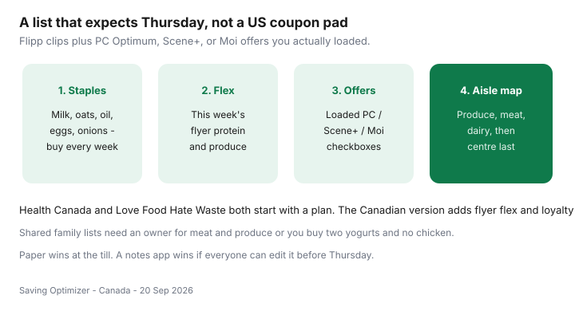

Food & Groceries · Canada
Build a reusable Canadian grocery list template tied to flyers and loyalty offers
Generic list templates assume a fixed menu and a US coupon book. Canadian weeks are Thursday flyers plus three loyalty apps that do nothing unless you load the offer. A reusable list has to expect that: staples that barely change, flex that comes from Flipp, and checkboxes for offers you actually activated.
Health Canada’s budget-shopping advice and Love Food Hate Waste both start with a written plan. This is the Canadian till version of that plan. It lives inside the weekly grocery system.
Disclosure: There is no natural affiliate product in a list. Shared notes or reminder apps are optional productivity tools, not a requirement. Saving Optimizer does not claim partnerships with Flipp, Loblaw, Empire, or Metro. Paper works.
Key takeaways
- Split the page: staples / flex / loaded offers / aisle order.
- Flex comes from Thursday Flipp, not from the fridge fantasy you had on Sunday.
- Only list loyalty deals you have already loaded in PC Optimum, Scene+, or Moi.
- Map aisles to your primary store so the chip aisle is not a scenic route.
- Shared lists need an owner for meat and produce or you buy two yogurts.
Core staples section vs weekly flex section

Staples: milk or alt-milk, oats, oil, onions, carrots, eggs (if they are not this week’s flyer event), coffee, dish soap if you are actually out. These lines persist. You only rewrite quantities.
Flex: this week’s protein, two produce items that finish, one pantry bridge on a real unit price. Flex is short. If flex is longer than staples, you are writing a catalogue.
Mapping aisles to your primary store
Walk your No Frills, FreshCo, Food Basics, Super C, or Maxi once and write the order: produce, bakery (usually skip), meat, dairy, frozen, centre, household. Put the list in that order. End caps then sit off the path. Banner-specific matching rules are in the Flipp system.
Offer checkboxes for loaded loyalty deals
| Program | Checkbox | Rule |
|---|---|---|
| PC Optimum | □ offer loaded □ in cart | Grocery earn is offers-first. Skip junk multipliers. |
| Scene+ | □ offer loaded □ in cart | FreshCo / Sobeys / Safeway only if you are going. |
| Moi | □ offer loaded □ in cart | Ontario vs Quebec earn rates differ — still load it. |
| Student 10% | □ Tuesday / Metro day | Only if the calendar matches. Verify locally. |
How to load without chasing junk is in maximize PC Optimum and the three-program comparison.
Produce by season notes
One line is enough: “berries only if local or on sale; otherwise frozen.” “Salad kits = no.” Canadian winters are a frozen-veg season. Health Canada’s budget page is comfortable with that. Fresh-vs-frozen detail is its own guide.
Digital vs paper list trade-offs
- Paper: harder to add chips mid-aisle; dies if you leave it on the fridge.
- Shared notes: two adults, one list; notifications can become nagging.
- Flipp list: good for clips and proofs; weak as an aisle map unless you reorder it.
- Retailer app: useful for pickup; designed to suggest extras. Treat suggestions as ads.
Pickup lists: the same template, minus aisle order. Check substitutions or you will receive the expensive banana.
Family shared lists without duplicate buys
- Name an owner for protein and an owner for produce each week.
- Staples can be checked off by anyone. Flex cannot be “someone will grab it.”
- Put quantities (“2× 2% milk”), not vibes (“dairy”).
- Delete last week’s flex on Sunday so you do not rebuy mangoes that already went soft.
- One flex treat on the list is cheaper than a hungry browse — see the impulse playbook.
Flyer dinners still come first — sales → meals → list. The template is the last artefact, not the first.
Sources & date stamps
- Health Canada, Healthy eating on a budget — plan meals and shop with a list (canada.ca; used 20 Sep 2026).
- Love Food Hate Waste Canada, Plan your meal (lovefoodhatewaste.ca; used 20 Sep 2026).
- Program mechanics: PC Optimum, Scene+, Moi offer-loading as described in our loyalty guides (verify in-app).
Frequently asked questions
What should a Canadian grocery list include that generic templates miss?
A staples block that rarely changes, a weekly flex block fed by Flipp, checkboxes for loaded PC Optimum / Scene+ / Moi offers, and aisle order for your primary store. US coupon pads skip all four.
Paper or phone?
Paper is harder to impulse-edit in the chip aisle. A shared notes app wins if two adults shop. Flipp lists are fine if you still walk a store map and not a circular tour.
How do I stop duplicate buys on a family list?
One owner for meat and produce each week. Shared staples can be checked off by anyone. Put names on the flex items (“Maya — yogurt”).
Should every loyalty offer go on the list?
Only offers you loaded and will actually cook. A 2000-point bonus on a snack you would not buy is not a list item.
Where do seasonal produce notes go?
A one-line note under flex: “berries only if local/on sale; otherwise frozen.” Health Canada’s budget guidance already prefers a plan over a wander.